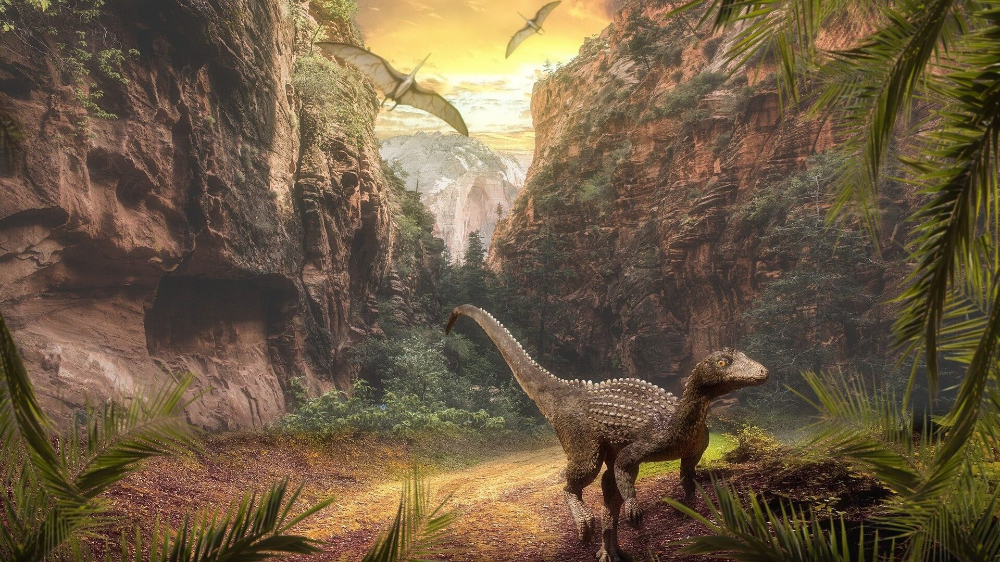

Lifestyle
Introduction: What Seperates Silesauridae From Dinosauria?
Silesauridae are part of the Archosaurs family lineage and share evolutionary similarities with the Dinosauria and the Crocodilians. This is evident due to the Silesauridae family being portrayed as a staple historical figure for how the reptiles in its sister group, the Dinosauria, and the Ornthischiacould have originated. The distinctiveness of their dental adaptations allows for a thorough analysis of their unique teeth attachment and the tooth replacement cycle, which led to an in-depth study of their position in the Archosaur's evolutionary narrative.
Discussion
While the teeth of dinosaurs and crocodylians are permanently attached to their sockets in a process known as permanent gomphosis, the teeth of silesaurids,
the ancestors of these animals, are permanently attached in a different way (LeBlanc et al., 2017). Based on studies conducted on a variety of silesaurid
specimens, it was discovered that these early dinosauriforms suffer from delayed ankylosis, in which the teeth take a long time to fuse to the jawbone
because they are kept suspended in their sockets by a periodontal ligament.
The tooth arrangement for the Silesauridae is more traditional than that of the Dinosaurs and the Crocodylians since the mechanism is more unique,
yet the tooth replacement is more similar to that of the newer evolution. The Silesaurdis tooth arrangement didn’t evolve as intricately due to
specific feeding activities and their diet which could have ultimately led to their demise. The oral attachment for the Dinosauria and the
Crocdylians adapted to effectively fit in with their niche foraging traits. Alternatively, a return to a previous, more rudimentary state could
be symbolized by the silesaurid condition (Mestriner et al., 2021).
The importance of dental ontogeny is highlighted in this study to dive more in-depth into the evolution of the earlier Archosaurs by looking into their
teeth arrangements when comparing them to the Silesarudis and the Dinosauria. The Ankylosis took longer to mature in the Silesaurdis which could
show a difference in their adaption ecologically and how they evolved. These small but key details could show habits and what led to the
differentiation of the reptiles in their respected sister group of the Archosaur lineage (Mestriner et al., 2021).
In addition, the condition of permanent gomphosis may have evolved independently in the two main dinosaur lineages, Ornithischia and Saurischia,
if Silesauridae is in fact a branch of Ornithischia. These results highlight how crucial it is to carefully take into account the length and
timing of various dental development phases when examining the evolution of early archosaurs (Mestriner et al., 2021).

Ornothischia, any member of the large taxonomic group of herbivorous dinosaurs comprising Triceratops and all dinosaurs more closely related to it than
to birds. The ornithischians (meaning “bird-hipped”) are one of the two major groups of dinosaurs, the other being the saurischians (Britannica et al., 2019).
The phylogenetic tree represents the gradual development of dental traits related to both omnivorous and herbivorous diets in silesaurids, connecting them
to the ornithischian clade. “Silesaurids have been considered the sister group to Dinosauria ... However, an alternative hypothesis considered silesaurids
as ornithischian dinosaurs. Subsequently, more comprehensive studies have reinforced this hypothesis. In this scenario, silesaurids are recovered within
Ornithischia as the sister group to typical ornithischians.” (Müller et al., 2020) This demonstrates the dietary similarities between Silesaurids and
Ornithischians due to their omnivorous/herbivorous diets. Which connected their feeding styles and tooth formation causing the belief that silesaurids
stem from the core ornithischians. Therefore, this demonstrates other dental anatomical-related dissimilarities between silesaurids and their sister group,
the Dinosauria. While filling in the whole of ornithischian evolution by relating them to the Silesauridae.

The similarities between crocodilian and dinosaur teeth lines were found to be morphologically equivalent. This led to the belief that von Ebner
glands (minor salivary glands at the back of the tongue, where they secrete the digestive enzyme amylase, which helps people break food down while
chewing (Gerald M et al., 2018)) form on dinosaur teeth as well. Incremental growth lines observed in extinct non-avian dinosaurs were similar to
lines of von Ebner observed in extant mammals and reptiles and likely reflected a homologous growth pattern among amniotes
(Erikson, 1996a, 1996b; D’Emic et al., 2019) (Maho et al., 2020, p.2). Amniotes are a clade of tetrapod vertebrates comprising reptiles, birds, and
mammals. The early amniotes diverged into two main lines soon after the first amniotes arose (Carter, n.d.). The initial split was into synapsids and
sauropsids. Tooth replacement rates can be estimated by identifying the presence of von Ebner lines, which offer a continuous growth record of a tooth.
The study of tooth replacement rate is by definition, the difference between the total number of days recorded in a functional tooth (i.e., the tooth’s
age from the start of the mineralization of its dentine) and the total number of days in the successive replacement tooth for a tooth position18, or the
age of the functional tooth (Commun et al., 2022). Tooth replacement has been determined to be clade-specific in the study of dinosauriaformes, with
rates as fast as 35 days as seen in herbivores, and as slow as 777 days as seen in carnivores (Erikson, 1996a, 1996b; D’Emic et al., 2019)
(Maho et al., 2020, p.2).
The study of silesaurids reveals a unique dental growth trajectory that differs significantly from the trends seen in crocodilians and dinosaurs.
Importantly, the early eruption phase reveals a dramatic difference in the way growing teeth are positioned. The teeth position presents the developmental
pattern observed in the majority of amniotes, including dinosaurs due to them being closer to the gum line. Whereas with crocodilians the teeth are
submerged in the jaw. In addition, the gomphosis stage in silesaurids has a temporary but unique tooth suspension mechanism, which is very different
from the hard and permanent tooth attachment seen in mammals, crocodiles, and dinosaurs. The discovery of delayed ankylosis in silesaurids—described as
the progressive joining of teeth to the jawbone—points to a striking similarity between the dental development trajectory of dinosaurs and crocodilians
(Snyder, LeBlanc, Jun, Bevitt, & Reisz, 2020) (Mestriner et al., 2021). Dental records demonstrate a connection to the archosaur family tree that can be
used to correlate fossilized specimens to modern reptiles and relations to their ancestors.
The dental analysis of silesaurids shows unique patterns in their developmental processes that are not found in crocodilians or dinosaurs.
The initial tooth eruption places silesaurid teeth closer to the gum line, in line with the trend seen in most amniotes and dinosaurs, unlike the submerged
position within the jaw typical of crocodilians. Moreover, silesaurid gomphosis exhibits a distinct tooth suspension mechanism, distinct from the permanent
attachment seen in mammals, crocodiles, and dinosaurs. The slow fusion of teeth to the jawbone, or delayed ankylosis, has been identified in silesaurids (Mestriner et al., 2021).
This dental development is similar to that seen in crocodilians and dinosaurs. Crocodilians and dinosaurs ultimately share the same
dental development as described by the definition of delayed ankylosis. Evolutionary linkages and other new understandings have been highlighted by the dental
analysis which identified the interactions between the larger phylogenetic relationships among extinct archosaurs and tooth morphology.

Conclusion
When diving into the theory that the Silisaurdae could have been the sister group of Ornothischians due to diet similarities.
It became apparent that their intricate adaptation process was demonstrated by the analysis of Silisaurde dental evolution divergence.
Which presented the connection of the ideology that they were the pre-evolutionary state of the Ornithischians. Furthering our studies on their
complex dental adaptation it was clear how the Silisaurdae developed teeth with unalike states of tooth attachment when comparing them to their
sister group the Dinosauria. This was due to the four phases of dental ontology and tooth replacement, known as eruption, prolonged gomphosis,
mineralization stage, and finally ankylosis. Ultimately, the evolutionary history of these extinct creatures has been revealed by the in-depth
analysis of their unique dental adaptations.
Eukaryota - Domain
Animalia - Kingdom
Chordata - Phylum
Archosauria - Clade Group
Avemetatarsalia - Clade Group
Ornithodira - Clade Group
Dinosauromorpha - Clade Group
Dinosauriformes - Clade Group
Dracohors - Clade group
Silesauridae - Family
Reference
Britannica, T (2019, February 24) Ornithischian. Encyclopedia Britannica.
https://www.britannica.com/animal/ornithischian
Carter S (n.d.) Introduction to Aminotes. Lumen Learning.
https://courses.lumenlearning.com/suny-wmopen-biology2/chapter/amniotes/
Gerald M (2018, May 07) What are Von Ebner Glands? Wellness Dental Plan.
https://www.wellnessdentalplan.com/blog/what-are-von-ebner-glands
Maho S (2020) Dental Anatomy, Development, and Replacement in the Early Permian Hyper-carnivorous Synapsid Mesenosaurus. Ecology and Evolutionary
Biology University of Toronto.
https://tspace.library.utoronto.ca/bitstream/1807/103498/1/Maho_Sigi_202011_MSc_thesis.pdf
Maho T, Maho S, Scott D, Reisz RR. (2022, Aug 19) Permian hypercarnivore suggests dental complexity among early amniotes. Nat Commun.;13(1):4882.
https://doi.org/10.1038/s41467-022-32621-5
Mestriner, G., LeBlanc, A., Nesbitt, S. J., Marsola, J. C. A., Irmis, R. B., Da-Rosa, Átila Augusto Stock, Ribeiro, A. M., Ferigolo, J., & Langer, M. (2021, May 22). Histological analysis of ankylothecodonty in Silesauridae (Archosauria: Dinosauriformes) and its implications for the evolution of dinosaur tooth attachment. The Anatomical Record, 305(2), 393–423.
https://doi.org/10.1002/ar.24679
Müller Rodrigo Temp and Garcia Maurício Silva (2020, 26 August) A paraphyletic ‘Silesauridae' as an alternative hypothesis for the initial
radiation of ornithischian dinosaurs. The Royal Society Publishing. http://doi.org/10.1098/rsbl.2020.0417
Silesauridae Scientific Classification (n.d.) Wikipedia.
https://en.wikipedia.org/wiki/Silesauridae
[Photography of Silesaurus with Kobierska J.] (2020, Oct) Blenderartists Retrieved October 26 2023, from
https://blenderartists.org/t/silesaurus-opolensis/1260646
[Photography of Silesaurus Habitat with Raven T. ] (2020, October 30) Geobites Retrieved October 26 2023, from
https://geobites.org/the-early-evolution-of-the-bird-hipped-dinosaurs/
[Photography of Silesauridae Filling the Gap of Ornithichian Evolution with Pinkstone J.] (2020, 25 August) Daily Mail Retrieved October 26 2023, from
https://www.dailymail.co.uk/sciencetech/article-8662653/Dog-sized-dinosaur-lived-230-million-years-ago-ancestor-Triceratops.html
[Photography of Silesaurus Phylogenetic Tree with Muller T. ] (2020, 26 August) The Royal Society. Retrieved October 26 2023, from
https://royalsocietypublishing.org/doi/10.1098/rsbl.2020.0417
[Photography of Silesaurus teeth with Collins S.] (2022, September 22) Phys Org. Retrieved October 26 2023, from
https://phys.org/news/2022-09-dinosaur-family-tree-bird-hipped-dinosaurs.html
[Photography of Replacement Cycle with Mestriner, G., LeBlanc, A., Nesbitt, S. J., Marsola, J. C. A., Irmis, R. B., Da-Rosa, Átila Augusto Stock, Ribeiro, A. M., Ferigolo, J., & Langer, M. ] (2021, May 22). The Anatomical Record, 305(2), 393–423. Retrieved October 26 2023, from
https://doi.org/10.1002/ar.24679
[Photography of Silesaurus with Apsaravis.] (n.d.) Dinopedia. Retrieved October 26 2023, from
https://dinopedia.fandom.com/wiki/Silesaurus